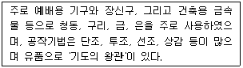
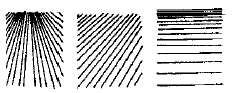
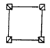
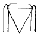
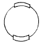
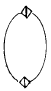

귀금속가공기능장 (2004-07-18 기출문제)
1과목: 임의 구분
1. 구석기 시대 장신구의 재료가 아닌 것은?
- 돌
- 골각
- 패각
- 금
(정답률: 알수없음)

2. 금속공예의 특징 중 이 시대에 제작된 귀걸이는 순금제가 없고 청동에 도금한 것 뿐인데 세환식에 간단한 삼각뿔 모양의 장식이 달린 것 만이 알려져 있다. 어느 시대를 말하는가?
- 고구려
- 신라
- 백제
- 고려
(정답률: 알수없음)
3. 과대에 늘어뜨리는 장식물은?
- 복두
- 사모
- 노리개
- 요패
(정답률: 알수없음)
4. 조선시대의 공예미와 가장 거리가 먼 것은?
- 평민적인 멋
- 귀족적이고 간결한 멋
- 소박하고 온화한 멋
- 생활도구에 집착한 멋
(정답률: 알수없음)
5. 다음 내용은 어느 시대의 금속공예 특징인가?

- 초기크리스트교
- 비잔틴
- 로마네스크
- 고딕
(정답률: 알수없음)
6. 신미술 운동으로 양식적 특색은 자연물의 유기적 형태로부터 모티브를 찾아 비대칭적이고 생동적이며 곡선적인 것은?
- 아르누보
- 아르데코
- 로코코
- 신조형주의 운동
(정답률: 알수없음)
7. 미국에서 가장 유명한 아르누보 양식의 유리, 금속, 보석디자이너이며, 스테인드글라스 창문과 보석 조명기구를 제작하였다. 1900년에는 티파니 스튜디오를 개설하였다. 관계 있는 것은?
- 구스타프 클림트(Gustav Klmit)
- 오호바그너(Otto Wagner)
- 루이스컴포트 티파니(Louis Comfort Tiffany)
- 사무엘 빙(Samuel Bing)
(정답률: 알수없음)
8. 동양에서 발달한 표현장식 기법으로 금속의 표면을 파내어 다른 금속을 끼워 넣는 기법은?
- 조금(彫金)
- 상감
- 낱알기법
- 부식
(정답률: 알수없음)
9. 다음 중 디자인의 조건에 해당되지 않는 것은?
- 합목적성
- 심미성
- 경제성
- 모방성
(정답률: 알수없음)
10. 유기적 형태를 바르게 설명한 것은?
- 직선형과 곡선형이 혼합된 형태
- 조약돌에서 흔히 볼 수 있는 유연한 형태
- 물감을 평면에 떨어뜨릴 때 우연히 생기는 형태
- 종이를 의식적으로 찢었을 때 생기는 형태
(정답률: 알수없음)
11. 다음 그림은 선의 어떤 특성을 주로 표현하고 있는가?

- 방향성
- 율동감
- 원근감
- 안정감
(정답률: 알수없음)
12. 둘 이상의 요소 또는 부분의 상호 관련성에 의해 아름답게 되는 상태는?
- 조화
- 균형
- 대비
- 통일
(정답률: 알수없음)
13. 시각화하는 과정에서 렌더링의 목적은?
- 기획, 구성하는 데 필요
- 제작전에 스타일 검토와 디자인 결정의 참고자료
- 재료에 대한 연구
- 제작기법에 관한 연구
(정답률: 알수없음)
14. 다음 척도에 관한 내용이 올바른 것은?
- 축척 : 2/1
- 배척 : 1/5
- 현척 : N.S
- 실척 : 1/1
(정답률: 알수없음)
15. 일반적인 제도에 쓰이는 투상법으로 입체를 평행한 시선으로 평면에 투상시키는 방법은?
- 정투상
- 사투상
- 투시투상
- 곡면투상
(정답률: 알수없음)
16. 다음 설명 중 잘못된 것은?
- 3점 투시도에 의한 입방체 표현 방법은 건축, 공예디자인, 쥬얼리 디자인 등에서 사용되고 있다.
- 가로수 같이 하나의 소점 밖에 갖지 않는 경우의 투시를 1점 투시 혹은 성각 투시라고 한다.
- 투시도법은 주로 소실점의 수에 의해 1점, 2점, 3점 투시의 3종으로 분류된다.
- 3개의 소점에 의해 그려지는 투시도를 3점투시 혹은 조감도법이라고 한다.
(정답률: 알수없음)
17. 파랑색에 흰색을 섞으면 파랑색은 어떻게 변하는가?
- 명도는 낮아지고 채도는 높아진다.
- 명도는 높아지고 채도는 낮아진다.
- 명도는 높아지고 채도도 높아진다.
- 명도는 낮아지고 채도도 낮아진다.
(정답률: 알수없음)
18. 중간 혼합에 대한 설명 중 틀린 것은?
- 병치혼합, 회전혼합이 있다.
- 병치혼합은 점묘법과 같으며, 직물에서도 느낄 수 있다.
- 두 색을 적절히 혼합한 것을 말한다.
- 회전혼합은 물체색이 반사하는 반사광이 혼합되는 것이다.
(정답률: 알수없음)
19. 면적에 따른 색의 대비효과에 관한 설명 중 맞는 것은? (단, 동일 색일 경우)
- 면적이 작은 것이 밝게 보인다.
- 면적이 큰 것이나 작은 것 모두 같다.
- 색 대비 효과는 일어나지 않는다.
- 면적이 큰 것이 밝고 선명하며, 면적이 작은 것이 어둡고 흐리게 보인다.
(정답률: 알수없음)
20. 다음 색 중 고귀, 엄숙, 신앙심을 연상시키는 색은?
- 녹색
- 빨강
- 보라
- 검정
(정답률: 알수없음)
2과목: 임의 구분
21. 색의 감정적 효과에서 중량감에 가장 큰 영향을 미치는 것은?
- 채도
- 명도
- 색상
- 대비
(정답률: 알수없음)
22. 배색을 할 때의 유의할 점이 아닌 것은?
- 사용하는 목적에 적합하도록 할 것
- 배색을 가급적 밝게 할 것
- 사용되는 재질과 형체를 고려하여 조화되도록 할 것
- 밝은 배색인지 어두운 배색인지를 미리 계획할 것
(정답률: 알수없음)
23. 광물에 대한 설명으로 해당되지 않는 것은?
- 무기질
- 유기질
- 천연산
- 일정한 결정구조
(정답률: 알수없음)
24. 보석의 난물림(Setting) 중 마퀴즈 컷(Marquise cut)의 난물림은?




(정답률: 알수없음)
25. 집시(gipsy)세팅작업의 또다른 명칭으로서 맞는 것은?
- 퓨즈세팅(fuse setting)
- 채널세팅(channel setting)
- 베벨세팅(beveled setting)
- 다이아몬드세팅(diamond setting)
(정답률: 알수없음)
26. 재단한 큐빅지르코니아를 돕스틱에 접착시키는 방법 중 잘못된 것은?
- 원석에다 접착제를 묻힌 다음 돕스틱을 따뜻하게 가열하여 접착한다.
- 접착작업전 원석을 알콜에 넣어서 세척하여야 한다.
- 셀락에 감탕을 섞어서 접착제로 사용할 수 있다.
- 원석을 따뜻하게 한 후 접착작업을 하면 훨씬 잘 접착된다.
(정답률: 알수없음)
27. 다음 중 채널 셋팅에 관한 설명 중 올바른 것은?
- 보석의 거들면은 광을 내지 않은 것이 좋다.
- 보석의 테이블 면과 레일의 상부면의 높이를 같게 하는 것이 좋다.
- 보석의 거들 두께가 되도록 얇은 것이 좋다.
- 보석의 테이블 면이 넓고 크라운 각도가 큰 것이 좋다.
(정답률: 알수없음)
28. 다음 중 순도 85%의 은제품에 표시할 천분율 단위로 올바른 각인은?
- 85%
- SIL85
- 850
- 85.0
(정답률: 알수없음)
29. 22K 금 합금 중 순금의 함량은 몇 % 인가?
- 91.7
- 83.4
- 95.2
- 87.5
(정답률: 알수없음)
30. 루비나 사파이어를 인조석과 식별할 때 가장 중요한 사항은?
- 경도
- 클리뷔지
- 투명도
- 인클루젼
(정답률: 알수없음)
31. 다음 중 유기물(有機物)보석에 해당되는 것은?
- 수정
- 다이아몬드
- 터키석
- 호박
(정답률: 알수없음)
32. 다음 보석 중 유기물 보석이 아닌 것은?
- 앰버
- 제트
- 가닛
- 진주
(정답률: 알수없음)
33. 패셋 컷으로 연마 했을 때 가장 효과가 적은 것은?
- 다이아몬드
- 에메랄드
- 호안석
- 아쿠아마린
(정답률: 알수없음)
34. 합성스피넬의 특성에 대한 설명 중 잘못된 것은?
- 광학성 : SR. 강한 ADR
- 굴절율 : 1.627
- 비중 : 3.64(+0.02, -0.12)
- 조흔 : 백색
(정답률: 알수없음)
35. 보석의 브릴리언시(휘광)를 결정하는 가장 중요한 요소는?
- 비율
- 굴절률
- 면의 연마
- 크기
(정답률: 알수없음)
36. 실용황동 중 7:3황동에 7~30%의 니켈을 합금한 것으로 은(Ag)이 전혀 포함되지 않았으나 색깔, 성질은 은과 거의 흡사하고, 부식저항이 크며, 식기, 가정용구, 악기 등에 많이 사용되는 금속은?
- 톰백(tombac)
- 망간브론즈(manganese bronze)
- 저먼실버(German silver)
- 니켈브론즈(nickel bronze)
(정답률: 알수없음)
37. 조밀육방격자에 속하지 않는 금속은?
- 카드뮴
- 마그네슘
- 아연
- 알루미늄
(정답률: 알수없음)
38. 백금은 4등급으로 분류되어 A등급은 물리적, B등급은 화학적, C등급은 화학공업, D등급은 전기접점 등에 사용된다. 이와 같이 분류되는 기준은?
- 연성
- 전성
- 비중
- 품위
(정답률: 알수없음)
39. 다음 금속 중 상온 상태에서 가장 빠른 색의 변화를 일으키는 금속은?
- 24K
- 은
- 백금
- 18K
(정답률: 알수없음)
40. 비금속으로 짝지어진 것은?
- 산소, 수소 등
- 규소, 플루오르 등
- 구리, 납, 수은 등
- 철, 구리, 알루미늄 등
(정답률: 알수없음)
3과목: 임의 구분
41. 귀금속 장신구류를 전해연마할 때 사용되는 전해액으로 적당한 것은?
- 탄산나트륨(Na2CO3)
- 질산(HNO3)
- 청산가리(NaCN)
- 염산(HCl)
(정답률: 알수없음)
42. 귀금속 분석시 건식법에 해당하는 것은?
- 질산분석법
- 왕수법
- 황산분석법
- 용융법
(정답률: 알수없음)
43. 대개 염가인 물건에 이용되는 얇은 금 도금으로 보통 두께가 0.15μ 이하의 것은?
- 금장(金張)
- 순금 도금
- 금 합금 도금
- 플래시 금도금
(정답률: 알수없음)
44. 다음 중 마름질 작업에 주로 속하지 않는 것은?
- 망치 사용법
- 금긋개 사용법
- 펀치, 컴퍼스 사용법
- 직선, 곡선가위 사용법
(정답률: 알수없음)
45. 다이스 작업시 절삭도중에 나사가 뜯기는 원인과 관계 없는 것은?
- 다이스가 마모되어 절삭할 수 없을 때
- 소재의 지름이 너무 클 때
- 절삭제를 쓰지 않았을 때
- 역회전 시키며 계속 절삭할 때
(정답률: 알수없음)
46. 줄눈의 상목과 하목이 비스듬히 깎여 다듬질 면이 곱고 절삭 방향이 똑바르게 정리되는 줄질 방법은?
- 직진법
- 사진법
- 병진법
- 횡진법
(정답률: 알수없음)
47. 가스용접시 토치불꽃 중에서 산화작용이 일어나지 않으며 금속표면에 침탄작용을 일으키는 백심(白心)의 불꽃은?
- 매연
- 탄화불꽃
- 중성불꽃
- 산화불꽃
(정답률: 알수없음)
48. K12, 23g으로 K14합금을 만들려고 한다. 이때 필요한 순금의 양은?
- 5.3g
- 5.1g
- 4.6g
- 3.8g
(정답률: 알수없음)
49. 백동(german silver)의 합금조성 비율이 옳은 것은?
- 구리(45∼63%),아연(14∼35%),니켈(5∼35%)
- 구리(45∼63%),은(25∼35%),니켈(15∼35%)
- 구리(45∼63%),주석(15∼35%),니켈(5∼35%)
- 구리(45∼63%),아연(25∼35%),알루미늄(15∼35%)
(정답률: 알수없음)
50. 다음 중 돋아 올리기 기법이 아닌 것은?
- 네덜란드식 올리기(dutch raising)
- 꺽어 올리기(angle raising)
- 크림핑(crimping)하여 올리기
- 거친다듬질(polishing)
(정답률: 알수없음)
51. 선상감 시, 상감된 선이 빠져나가지 않게 홈의 벽 밑면부분(공간)의 단면을 어떠한 꼴로 만들어야 효과적인가?
- 마름모형
- 직사각형
- 사다리꼴형
- 다이아몬드형
(정답률: 알수없음)
52. 산소용기(실린더)의 자체 무게는 약 70㎏이다. 이 때 충전되는 산소의 무게는?
- 8.4㎏
- 7.4㎏
- 6.4㎏
- 5.4㎏
(정답률: 알수없음)
53. 순은 제품이나 칠보기법에 사용되는 땜 중 가장 이상적인 것은?
- 70% 은땜
- 80% 은땜
- 90% 은땜
- 제물땜
(정답률: 알수없음)
54. 정밀주조(Lost Wax Casting) 작업 과정 중, 고무주형을 전기경화기에 넣어 경화시킬 때의 적합한 경화온도는?
- 124℃
- 134℃
- 144℃
- 154℃
(정답률: 알수없음)
55. 주조반지에 대한 설명 중 잘못된 것은?
- 대량으로 생산할 수 있다.
- 세공으로 제작된 반지에 비해 더욱 견고하다.
- 자유로운 형태로 제작할 수 있다.
- 생산비가 세공으로 제작된 반지에 비해 저렴하다.
(정답률: 알수없음)
56. 정밀주조 작업에서 쇳물의 흐름이 좋은 일감의 이상적인 부착각도는?
- 15°
- 20°
- 30°
- 45°
(정답률: 알수없음)
57. 매몰시 매몰재 파우더와 물의 일반적인 배합비율은?
- 100 : 80
- 100 : 60
- 100 : 40
- 100 : 20
(정답률: 알수없음)
58. 각종 연마재 및 광택재료를 순서별, 단계적으로 사용하여 연마하는 방법으로 매체(Media)를 이용하는 것이 특징인 것은?
- 전해연마
- 바렐연마
- 버프연마
- 스트리핑
(정답률: 알수없음)
59. 귀금속 회수 및 분석에 사용하는 약품의 취급상 주의점이 올바른 것은?
- 환기가 잘 되고 사용설비가 완벽한 곳에서 취급
- 가스 누출의 위험이 있으므로 밀폐공간 활용
- 야외의 넓은 공원, 항상 낮은 온도에서 취급
- 발열, 폭발할 우려가 있으므로 항상 얼음을 준비
(정답률: 알수없음)
60. 제품 표면의 산화 피막을 제거하기 위하여 묽은 황산을 만들 경우 올바른 희석 방법은?
- 상온의 물에 황산을 붓는다.
- 상온의 황산에 물을 붓는다.
- 황산과 물을 번갈아 붓는다.
- 차거운 황산에 물을 붓는다.
(정답률: 알수없음)